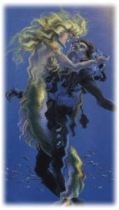

B- trois formes d'ivresse :
1- ivresse amoureuse
Suzy a 36 ans et depuis l'âge de 16 ans elle va d'une relation affective à une autre. Chaque fois elle est passionnée au point d'être perdue dans le brouillard de ses émotions et fantasmes. Le temps, le lieu et l'espace n'existent plus. Tantôt elle vogue dans l'euphorie de ses élans amoureux, tantôt elle ressent la privation, surtout lorsque son partenaire n'est pas près d'elle. Suzy s'enivre de musique romantique, elle est figée sur son divan, elle est inactive, elle ne sait plus très bien ce qu'elle doit faire. Son ivresse est un îlot d'obsessions fusionnelles (lire : Dépendance affective et besoins humains). Elle se gave de pensées illusoires. Suzy n'arrive plus à reconnaître ses indicateurs émotifs (lire : À quoi servent les émotions).
 Pourquoi Suzy s'enivre-t-elle ainsi d'amour et d'illusions ? À quoi lui sert cette ivresse ?
2- ivresse ésotérique :
Johanne a 47 ans, elle est divorcée, mère de 4 filles. Elle est sans emploi, n'est pas très populaire auprès de ses amies et a tendance à s'isoler.
Un jour, voulant savoir pourquoi sa vie est si terne, elle consulte une soi-disant "clairvoyante". Cette rencontre est une révélation qui va bouleverser sa vie pendant un long moment.
La "clairvoyante" lui annonce qu'elle a des dons de clairvoyance et qu'elle devait, si elle veut changer le cours de sa vie, suivre des sessions intensives pour apprendre à "lire les cartes" et affiner ses dons de clairvoyance. Johanne n'a pas d'argent mais la tentation est trop grande pour refuser une telle offre. Alors, grâce à sa carte de crédit, elle suit des sessions intensives et passe la majeure partie de son temps à lire tout les bouquins qui lui passent sous la main et qui traitent de sujets ésotérique.
Johanne ne s'occupe plus de ses enfants, ni des tâches à la maison. Elle part très tôt le matin pour revenir très tard le soir. Elle fait la tournée de ses clients et clientes afin d'exercer ses "nouveaux pouvoirs" et de récolter quelques maigres revenus dans l'espoir de rembourser les milliers de dollars investis pour sa formation. Elle est aussi devenue le centre d'attention de ses nouveaux amis.
Johanne s'enivre carrément de ses pensées ésotériques. Il n'y a que les cartes qui peuvent sauver le monde et elle est devenue sourde et aveugle face aux demandes répétées de ses enfants qui se sentent délaissés, abandonnés.
Quelles sont les motivations illusoires qui ont entraînées Johanne dans une telle ivresse ésotérique ? À quoi cette aventure lui sert-elle ?
3- ivresse chimique :
Paul a 32 ans. Il est marié, père d'un garçon de 3 ans. Il est informaticien et travaille de nombreuses heures sous le prétexte qu'il doit être performant pour se tailler une place de choix au sein de l'entreprise.
Dès l'âge de 14 ans, Paul consomme des drogues et de l'alcool. Etant timide, renfermé et peu sûr de lui, il trouve dans ces substances un moyen d'atténuer sa timidité et de devenir plus confiant.
A 18 ans, il termine sa formation en informatique, se trouve un bon emploi. Sa consommation augmente. Il découvre alors sa drogue de choix ; la cocaïne. C'est la drogue qui lui donne l'illusion d'être plus performant .
En cinq ans, Paul devient complètement dépendant de l'alcool et de la cocaïne. Ces substances commencent à nuire à son travail et à sa relation de couple. Il est soit maussade, soit arrogant, voire agressif. Paul a perdu le contrôle de sa vie car les substances sont devenues essentielles à son fonctionnement quotidien.
Quelle est la dynamique qui a entraîné Paul dans cette ivresse chimique ? Comment se fait-il qu'il ne soit plus capable de s'en passer ?
|
|